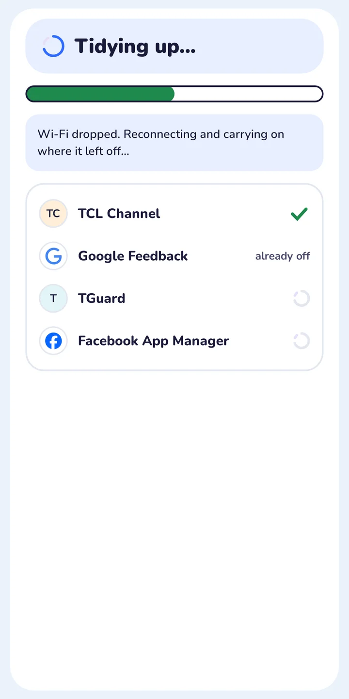

First, switch on developer mode.
On the TV: Settings, About, press Build seven times, then turn on Network debugging.

A free phone app that turns off the ads, trackers and bloat on your Android TV. No laptop, no AI, and one tap undoes it.
On the TV: Settings, About, press Build seven times, then turn on Network debugging.
Turn off the ads on my home screen.
Sponsored rows, betting and delivery ads, TCL Channel and PatchWall promos go quiet.
Stop the TV watching me.
Content-recognition trackers like Samba TV, Alphonso and Anoki, plus maker analytics, are turned off.
Clear out apps I never opened.
E-manuals, shop demo mode, preinstalled games and stores. Each one is turned off, never deleted.
Give me a calmer home screen.
An optional 37 KB home screen with just your apps. The old one returns with Restore.
Keep my voice assistant.
Voice, casting and updates start switched off in tidytv's list, so they stay on until you choose.
The viral fix hands an AI assistant on a laptop the keys to your TV. tidytv runs a fixed list, from your phone, the same way every time.

| What you need | An Android phone on the same Wi-Fi. No laptop, adb or AI subscription. |
|---|---|
| What it runs | A tested list for your model, one app at a time, each checked before the next. |
| Never touched | Play Store, Play Services, HDMI inputs, the tuner, remote pairing and the keyboard. |
| Before anything | A backup of your apps, settings and home screen, saved on your phone. |
| If you change your mind | Restore everything. The undo list is kept on your phone and on the TV. |
| Price | Free. Open source under the MIT licence. No ads, no account. |
Each list was made on a real TV by the cleanyourtv community: 25 brands so far, from TCL and Sony to Chromecast and the Nvidia Shield.
Yes. tidytv is free and open source under the MIT licence. No ads, no account, no tracking.
Android TV and Google TV sets and boxes. Fire TV gets the clean-up but keeps Amazon's home screen. Samsung and LG don't run Android, so they can't be cleaned this way.
tidytv never uninstalls anything and refuses to touch the apps a TV needs. A backup comes first, and Restore everything turns every app back on.
No. It turns off the TV maker's ads, sponsored rows and trackers. Ads inside apps are not affected.
tidytv's optional home screen is handed Home only after it has started, and tidytv checks where Home landed. If Google TV's setup app grabs Home, it puts your old one back.
Yes. tidytv shows you how, then checks the TV no longer accepts debugging connections.
Install the APK on your Android phone, switch on developer mode on the TV, and tap three times.